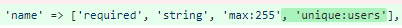

For this sprint, I assigned myself the admin user role, as well as checking each username to be unique at creation and a minimum required age for each user to register
These were small tickets to work through, as it was an easy google search to find out how to implement them into my already existing code for authentication. Checking the minimum age involved adding a custom rule to check if the user inputted age was less than 13 and was a single line to implement. Checking the each new username was unique involved adding a rule to the validator class, to check that no other users with that name existed.
This was the task that took me the longest this sprint, due to its complexity compared to the other tickets as well as it required that I learn about implementing custom roles and permissions. To complete this task, I used a laravel dependency called spatie that creates a framework to create custom roles and permissions. Spatie works by having tables that you can associate users with to give roles and permissions. The biggest issue I encountered was that following the tutorials for spatie was difficult as the examples they created didnt always relate to the type of work I needed to complete and they would not be clear where you could call functions within your laravel. For example, the tutorials I was following didnt clearly explain the difference between assigning a role and a permission, which I came to learn do very similar things to each other, as roles can be assigned permissions and users can be assigned to roles, but users can also be assigned permissions, so I found it difficult to decide why I should use one way over the other. I eventually realised it was likely needed in large websites with lots of users and users needing to share lots of different permissions but this didnt become clear untill I had messed around with code for a long time.
I think my communication for this sprint was done well. As I was the scrum leader for this sprint, I decided that I would keep an emphasis on sending out messages regularly to my team members both to keep my self working as well as encourage my team members to get their work finished before the deadline so we could merge. I think this helped our team keep ourselves accountable to the amount of work we were completing. Sending out messages online regularly to maintain work pace was important for myself as I had a friend in town, so had alot more activites on my schedule to plan for.
On the first day of the sprint, when we were given the tasks to complete for this sprint, as sprint leader I was supposed to assign each team member their storys for the sprint. However because some team members decided to pack up early, I wrote up the user stories to the kanabn but put off assigning tasks untill our next meeting. I view this as a failing on my part, because as the sprint leader, I hampered my team mates abilities to start on their tasks as soon as possible. This might have been a reason as too why we had several user stories started but not finished by the end of the sprint. I take responsibility for this happening, and in future, I aim to get any of my administrative tasks finished as quickly as possible to not prevent my team mates from doing work.
As I stated in the what I could have done better section, I learned a lesson about priorities. I found out that I should always prioritize tasks that will enable my teammates to do their work, this means that we will always be able to get our work finished as soon as possible without any slow downs.
I think the only barrier I encountered this sprint was continuing to finish tasks before the last few days of a sprint. If I judge that I can get my tasks finished by the deadline, I tend to leave them to the shortest amount of time that the can be completed in. This is a barrier I will have to work to overcome in future.